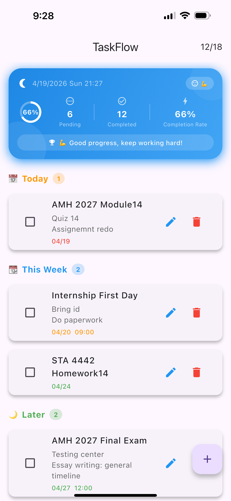
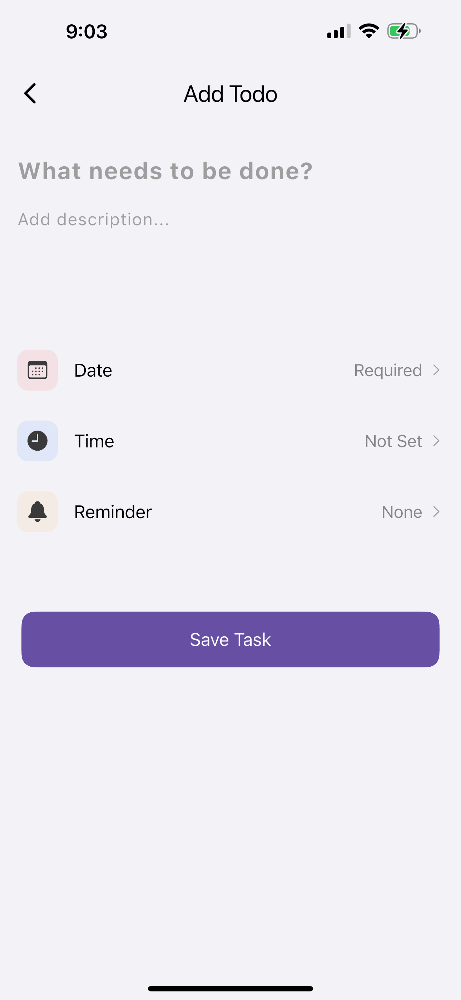
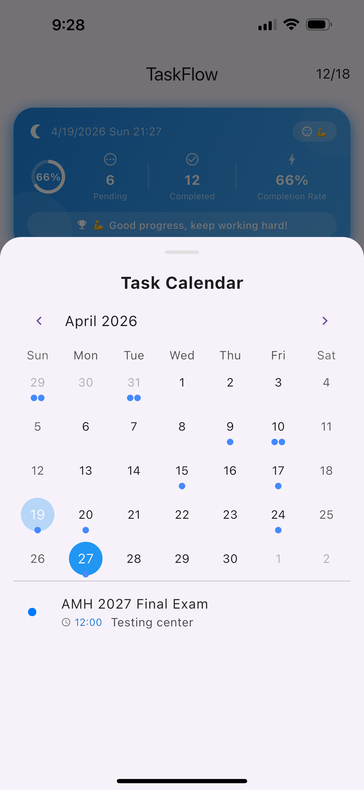

Purrfect was born from the idea that productivity tools should be as seamless and "perfect" as possible. I wanted to balance data density with minimalist aesthetics.
Developing this allowed me to master asynchronous data handling in Dart and deep-dive into Flutter's layout engine.